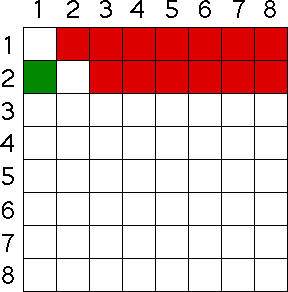

| What about animal 2? |
| Certainly, it cannot compete with itself, so as we count up the competitive pairs, we might think there are seven involving animal 2. |
| But we must be a bit more careful. We do not want to count the pairing of animal 2 and animal 1, because we have already accounted for the competiton between animals 1 and 2. |
| So the animal 2 competing with animal 1 square, colored green in the chart, is not counted. |
| So we have six new competitive pairs: animal 2 with animal 3, animal 2 with animal 4, ..., animal 2 with animal 8. |
|  |
| What about animal 3? |
Return to the Logistic Map.